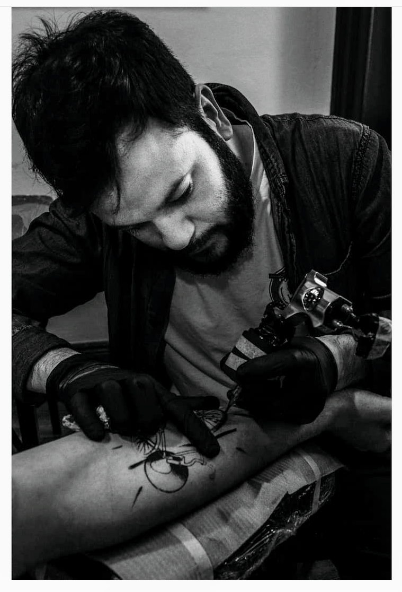

 Oriundo de Bonifacio (un pueblo del interior de Bs.
As.),
Terminó el secundario y a los 17 años comenzó su viaje en búsqueda de aquello que lo apasiona,
estudió economía, tuvo varios trabajos diferentes, hasta que se encontró con su vocación.
Ese viaje de autoconocimiento lo llevó a vivir en España por diez años, empezó su carrera dibujando,
y fue adquiriendo nuevas técnicas y conocimientos que lo llevaron al arte del tatuaje,
Fue un largo camino de aprendizajes y mucho trabajo, el reconocimiento no tardó en llegar:
fue invitado a participar de exposiciones tanto en Europa como en Argentina,
incluso en su amado Bonifacio donde pintó un mural para la comunidad,
sus diseños dieron portada a un libro, y a varias remeras que llevan su estampa, sin mencionar
a todas las personas que llevan su arte tatuado en la piel.